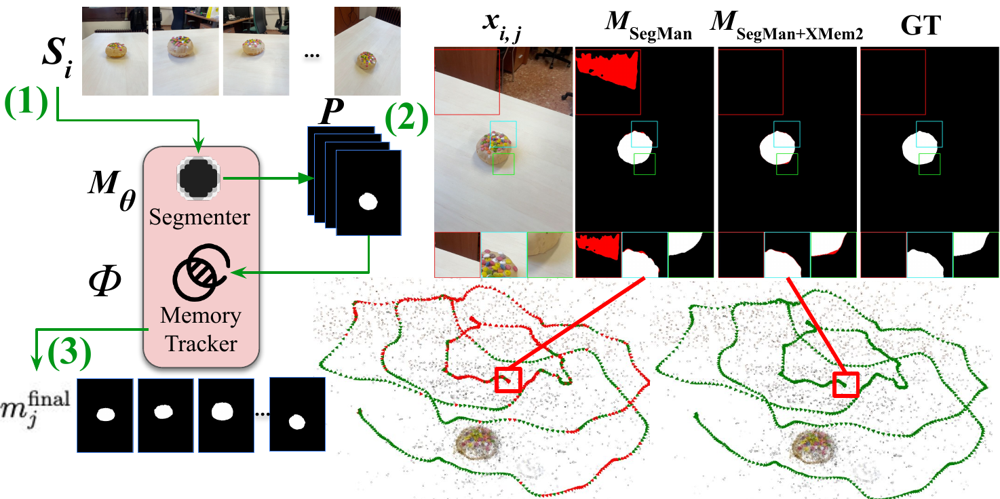
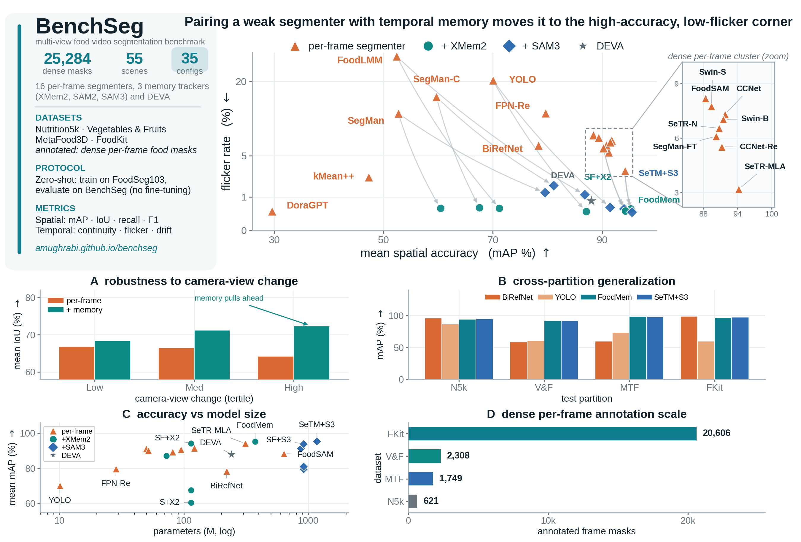
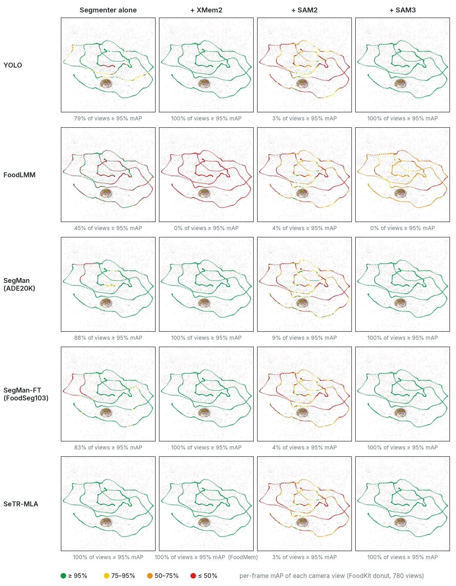

BenchSeg: A Densely Annotated Dataset and Benchmark for Multi-View Food Video Segmentation
Expert Systems with Applications, 2026 · doi:10.1016/j.eswa.2026.135234
*Equal contribution · †Equal supervision
TL;DR
People film their meals with a moving phone, but food segmentation is trained and tested on single photos. BenchSeg measures what happens in between.
BenchSeg re-annotates 25,284 frames of 55 dishes captured under free 360° camera motion, from Nutrition5k, Vegetables & Fruits, MetaFood3D and FoodKit, under one binary food definition. It evaluates 35 segmentation configurations zero-shot (no model is trained on BenchSeg) and adds temporal-stability metrics: continuity, flicker rate and IoU drift. Image-only segmenters flicker as the camera moves. Pairing them with a video memory module (XMem2 or SAM3) makes them stable, and the strongest hybrids, SeTR-MLA + SAM3 (95.44% mean mAP) and FoodMem (95.20%), lead the benchmark.
Video
A two-minute overview (no sound) built from BenchSeg frames, masks and results.
Download MP4.
Imagery: Nutrition5k, Vegetables & Fruits and FoodKit (CC BY 4.0); MetaFood3D (CC BY-NC 4.0); frames cropped, masks overlaid.
Abstract
Food image segmentation is a critical task for dietary analysis, enabling accurate estimation of food volume and nutrients. However, current methods suffer from limited multi-view data and poor generalization to new viewpoints. We introduce BenchSeg, a novel multi-view food video segmentation dataset and benchmark. BenchSeg aggregates 55 dish scenes (from Nutrition5k, Vegetables & Fruits, MetaFood3D, and FoodKit) with 25,284 meticulously annotated frames, capturing each dish under free 360° camera motion. BenchSeg is large in dense per-frame annotation volume rather than in cuisine or scene-type diversity, and it targets multi-view and free-motion evaluation with cross-dataset and cross-viewpoint comparison within these existing collections, rather than broader food-scene or cuisine-level generalization. We evaluate a diverse set of 35 segmentation configurations (e.g., SAM-based, transformer, CNN, and large multimodal) on the existing FoodSeg103 dataset and evaluate them (alone and combined with video-memory modules) on BenchSeg. Quantitative and qualitative results demonstrate that while standard image segmenters degrade sharply under novel viewpoints, memory-augmented methods maintain temporal consistency across frames. Our best model, the combination SeTR-MLA+SAM3 (SeTM+S3), attains the highest mean mAP across the four partitions (95.44%) and is competitive with the strong FoodMem baseline (95.20%), while matching its best-in-class temporal stability, offering new insights into food segmentation and tracking for dietary analysis. In addition to frame-wise spatial accuracy, we introduce a dedicated temporal evaluation protocol that explicitly quantifies segmentation stability over time through continuity, flicker rate, and IoU drift metrics. This allows us to reveal failure modes that remain invisible under standard per-frame evaluations. We release BenchSeg to foster future research.
Evaluation pipeline

Temporal stability metrics
Frame-wise scores cannot tell a steady mask from one that flickers on and off. BenchSeg therefore scores each sequence from its per-frame IoU with the ground truth:
- Continuity Cγ
- the fraction of consecutive frame pairs whose IoU both stay at or above γ = 0.5, the usual “acceptable mask” threshold.
- Flicker rate FRδ
- the fraction of consecutive frames where IoU drops by more than δ = 0.2.
- IoU drift ΔIoU and volatility σIoU
- the mean absolute frame-to-frame change in IoU, and its standard deviation over the sequence. All metrics are averaged per scene, then across the scenes of each partition; the method ranking is stable across γ ∈ [0.4, 0.7] and δ ∈ [0.1, 0.3] (Spearman ρ ≥ 0.97).
Results


Data & code
The dataset annotations and pretrained models are available for download. The per-scene, per-run and per-metric CSVs behind every table and figure are in the reproducibility release, and the code is on GitHub. BenchSeg contributes the masks and the benchmark; the RGB frames come from the source datasets under their own licenses: Nutrition5k, Vegetables & Fruits and FoodKit (CC BY 4.0) and MetaFood3D (CC BY-NC 4.0, non-commercial use only). A preprint is on arXiv.
Acknowledgments
This work was partially funded by the EU project FoodWISE, 2021-SGR-01094 (AGAUR), ICREA Academia’2022 (Generalitat de Catalunya), and Grants PID2022-141566NB-I00 (IDEATE), PID2025-173459NB-C21 (TRI-VISION), PID2025-173459NB-C22 (PULSAR) and AIA2025-163919-C51 (EXPLORA), funded by MICIU/AEI, by FEDER (UE), and by European Union NextGenerationEU/PRTR. A. AlMughrabi acknowledges the support of FPI Becas, MICINN, Spain. U. Haroon acknowledges the support of FI-SDUR Becas, MICINN, Spain. F. Al-Areqi acknowledges the support of the FI 2025 doctoral fellowship (AGAUR), Spain. The authors thankfully acknowledge the RES resources provided by the Barcelona Supercomputing Center on MareNostrum5 for IM-2025-3-0008.